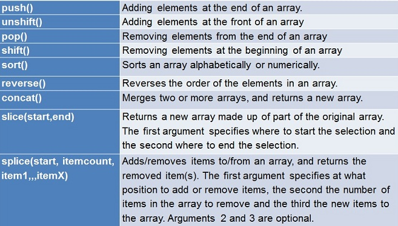

Every array has a length property. Contrary to most languages, there is no upper bound to the array length. Thus if we store an element with an index greater than the current array length, there will be no upper bound error. The array will increase automatically to contain the new element.
Several array method exists to perform operations on an array. Some of them mutate the original array some don't.
You can see the most common ones in the picture below:
